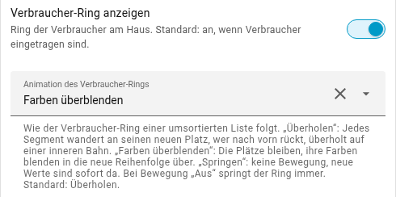
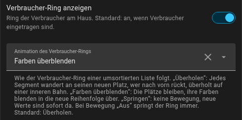
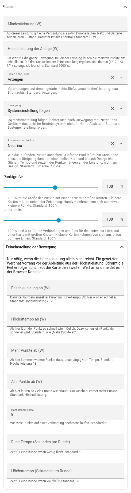
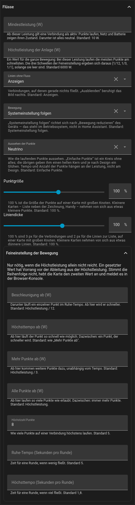

Animationen
Die Karte bewegt zwei Dinge: den Verbraucher-Ring, wenn sich die Reihenfolge
der Verbraucher ändert, und die Punkte auf den Linien, die den Fluss zeigen.
Beides lässt sich einstellen. Unter Flüsse → Bewegung schaltet off jede
Bewegung ab; der Standard auto folgt der Einstellung „Bewegung reduzieren“
des Geräts.
Der Ring
Die Liste ordnet sich im festen Takt nach Leistung, und der Ring folgt ihr. Wie er das tut, gibt es dreimal:
- Überholen (Standard): Jedes Segment wandert an seinen neuen Platz. Wer nach vorn rückt, taucht auf eine innere Bahn ab, fährt unter den anderen hindurch und taucht an seinem Platz wieder auf.
- Farben überblenden: Die Plätze bleiben stehen, ihre Farben blenden in die neue Reihenfolge über. Ruhiger, gerade wenn sich die Reihenfolge oft ändert.
- Springen: Keine Bewegung, der Ring steht sofort in der neuen Ordnung.
Zum Ausprobieren: In dieser Karte schwanken vier Verbraucher um denselben Mittelwert, ihre Reihenfolge ändert sich alle paar Sekunden. Liste und Quick-Buttons sind ausgeblendet, damit nur der Ring zu sehen ist.
Im Editor steht die Auswahl unter Darstellung → Animation des Verbraucher-Rings:

Der PV-Ring mehrerer Quellen folgt derselben Einstellung.
Die Punkte
Die Punkte zeigen, wohin Leistung fließt. Tempo und Anzahl hängen an der Leistung: Unter der Mindestleistung (Standard 10 W) läuft keiner, darüber zuerst ein langsamer Punkt; mit mehr Leistung wird er schneller, dann kommen weitere dazu, bis Höchsttempo und Höchstzahl erreicht sind. Wo das ist, sagt ein einziger Wert, die Höchstleistung der Anlage (Standard 6000 W); wer es genauer will, findet die einzelnen Schwellen unter Feineinstellung der Bewegung.
Wie ein Punkt aussieht, ist sein Design: Einfache Punkte (Standard) sind ein Kreis ohne alles, die übrigen geben ihm einen hellen Kern und je nach Design ein Glühen. Das Design ändert nur das Aussehen, nie Tempo oder Anzahl.
Zum Ausprobieren: Hier stehen alle Werte still, nichts sortiert um – nur die Punkte bewegen sich. Die Schalter wählen das Design, die Schieber die Höchstzahl der Punkte (die Karte nimmt 2 bis 10, Standard 5), die Punktgröße (40 bis 150 %, Standard 100) und das Tempo: Sekunden pro Runde an der unteren und an der oberen Schwelle, Standard 5 und 1,8.
Im Editor: die Gruppe Flüsse. Höchstzahl und Tempo stehen unter Feineinstellung der Bewegung.


ring:
animation: fade # overtake | fade | jump
flow:
animation: auto # auto | on | off
design: neutrino
max_dots: 8
slow_s: 8 # Sekunden pro Runde bei wenig Leistung
fast_s: 3 # ... bei viel Leistung